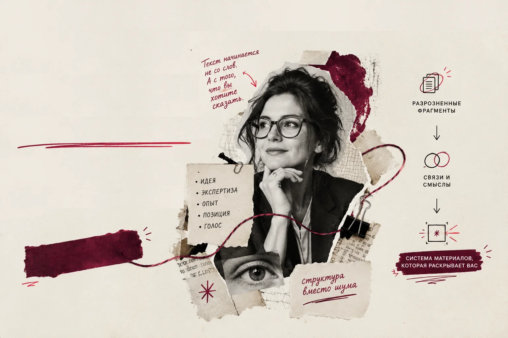
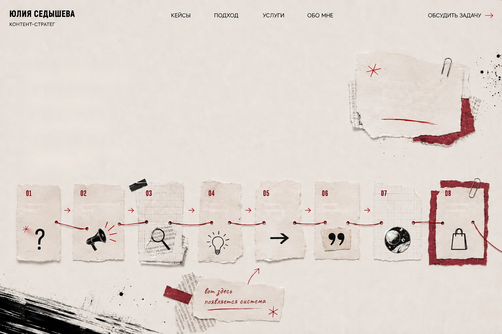
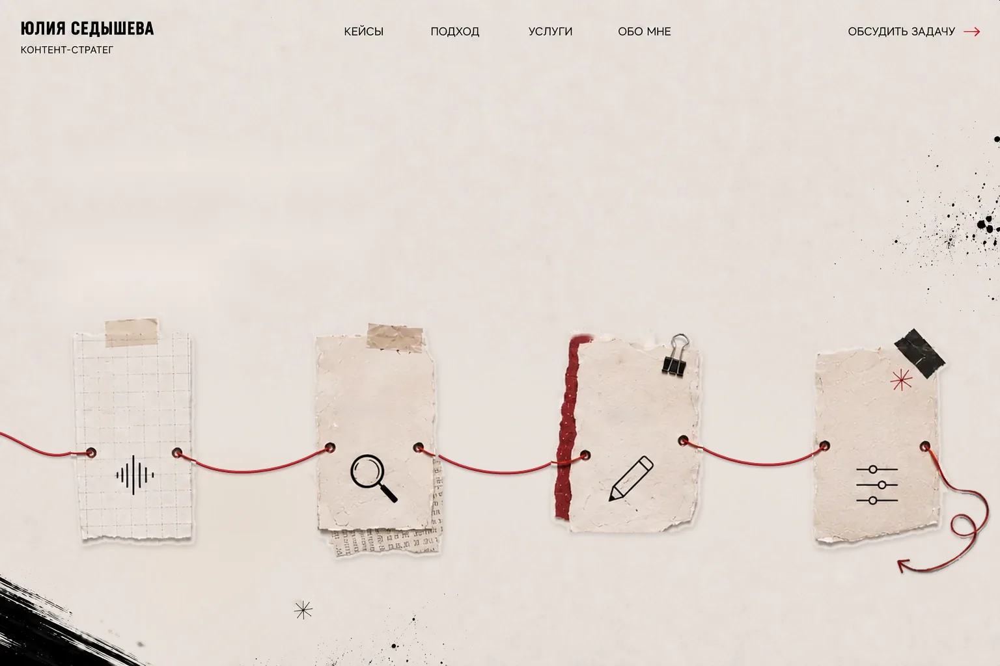
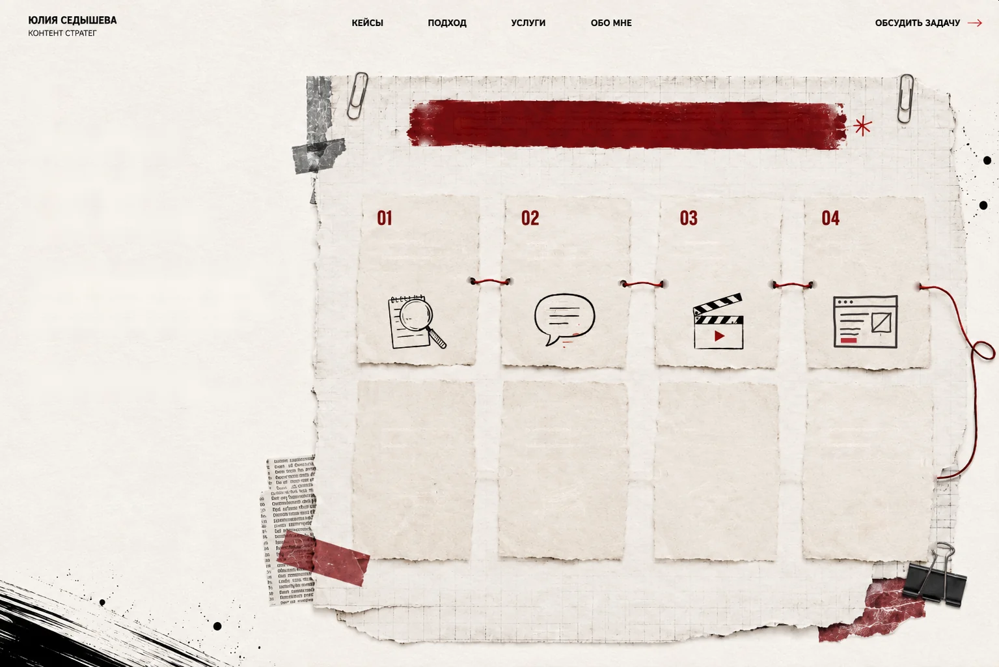
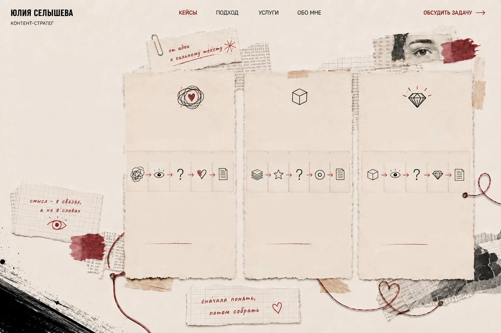
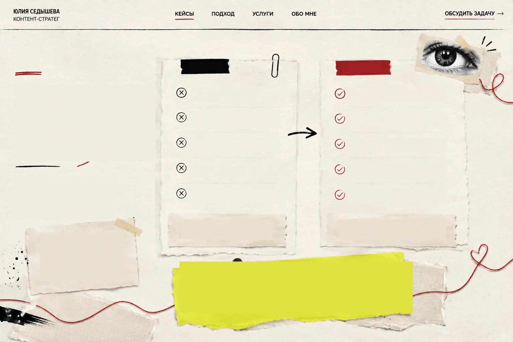
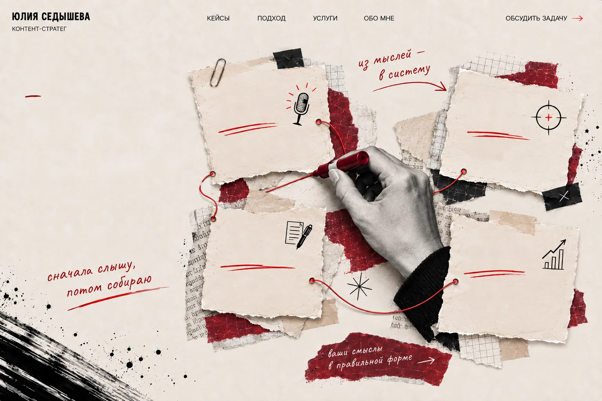

Сайт психолога
Было · Увидела · Исследовала · Нашла · Сделала
Не продавать психолога дипломами. Сначала показать человека и подход — потом опыт. Исследовала аудиторию, собрала структуру и тексты сайта, предложила визуальную концепцию.

Обсудить задачуПозиционирование·Тексты·AI-визуал·Сайты
Человека запоминают.
У вас уже есть опыт, идеи и свой характер.
Я нахожу то, что отличает вас от других,
и помогаю показать это клиентам — через
исследование аудитории, тексты, визуал и сайты.
Человека запоминают.
Позиционирование·Тексты·AI-визуал·Сайты
У вас уже есть опыт, идеи и свой характер.
Я нахожу то, что отличает вас от других, и помогаю показать это клиентам — через исследование аудитории, тексты, визуал и сайты.
У вас есть опыт, идеи, проекты, клиенты. Возможно,
хороший продукт и десятки довольных покупателей.
Но всё это существует отдельно: сайт рассказывает
одно, соцсети — другое, а самое важное остаётся
где-то между строк.
А потом наступает вторник.
И снова нужно придумать,
что о себе рассказать.
идей много —
образ не
складывается
Всё ценное —
в разных местах.
Материалов много.
А цельного представления о вас
или вашем бренде так и не возникает.
У вас есть опыт, идеи, проекты, клиенты. Возможно, хороший продукт и десятки довольных покупателей.
Но всё это существует отдельно: сайт рассказывает одно, соцсети — другое, а самое важное остаётся где-то между строк.
А потом наступает вторник. И снова нужно придумать, что о себе рассказать.
Всё ценное — в разных местах.
идей много — образ не складывается
Материалов много. А цельного представления о вас или вашем бренде так и не возникает.

03Сильная подача начинается не с красивой картинки
и не с удачного текста.
Сначала нужно понять, что делает вас или ваш бренд
особенным. А потом связать эту идею со всем, что видит
и читает ваш будущий клиент.
одна идея
связывает всё
Не обязательно делать
всё сразу. Важно, чтобы
каждая часть работала
на общую идею.
Сильная подача начинается не с красивой картинки и не с удачного текста.
Сначала нужно понять, что делает вас или ваш бренд особенным. А потом связать эту идею со всем, что видит и читает ваш будущий клиент.
одна идея связывает всё
Не обязательно делать всё сразу. Важно, чтобы каждая часть работала на общую идею.

04Мне не нужно научиться говорить вместо вас. Мне нужно научиться хорошо вас слышать.
Мне не нужно научиться говорить вместо вас. Мне нужно научиться хорошо вас слышать.

05У вас уже есть то, чем можно отличаться.
Моя работа — найти это и показать другим.
У вас может быть готовая идея, много разрозненных
материалов или только ощущение, что нынешняя
подача совсем не отражает вас.
Не обязательно заказывать всё сразу. Можно
решить одну задачу или собрать целый проект.
Сначала разберёмся, что у вас уже есть,
чего не хватает и какой объём работы
действительно нужен.
После знакомства с задачей предложу
решение, сроки и стоимость.
У вас уже есть то, чем можно отличаться. Моя работа — найти это и показать другим.
У вас может быть готовая идея, много разрозненных материалов или только ощущение, что нынешняя подача совсем не отражает вас.
Не обязательно заказывать всё сразу. Можно решить одну задачу или собрать целый проект.
Сначала разберёмся, что у вас уже есть, чего не хватает и какой объём работы действительно нужен.
После знакомства с задачей предложу решение, сроки и стоимость.
Обсудить задачу
06Не витрина готовых текстов.
Показываю ход мысли: что заметила,
что исследовала, какое решение
нашла и почему выбрала именно его.
Не продавать психолога дипломами.
Сначала показать человека и подход —
потом опыт. Исследовала аудиторию,
собрала структуру и тексты сайта,
предложила визуальную концепцию.
Факты у бренда были. Не хватало
человека, который их читает. Написала
пост для Telegram и переработала
брендовый текст: о состоянии
руководителя, которому нужна ясность,
а не о продукте.
Не «15 бар», а утро, в котором кофе
каждый раз получается таким, как
хочется. Перевела характеристики
кофемашины в ритуал: статья,
структура карточки товара, слоганы.
Не витрина готовых текстов. Показываю ход мысли: что заметила, что исследовала, какое решение нашла и почему выбрала именно его.
Было · Увидела · Исследовала · Нашла · Сделала
Не продавать психолога дипломами. Сначала показать человека и подход — потом опыт. Исследовала аудиторию, собрала структуру и тексты сайта, предложила визуальную концепцию.
Было · Увидела · Исследовала · Нашла · Сделала
Факты у бренда были. Не хватало человека, который их читает. Написала пост для Telegram и переработала брендовый текст: о состоянии руководителя, которому нужна ясность, а не о продукте.
Было · Увидела · Исследовала · Нашла · Сделала
Не «15 бар», а утро, в котором кофе каждый раз получается таким, как хочется. Перевела характеристики кофемашины в ритуал: статья, структура карточки товара, слоганы.
Много опыта, методов, образования и клиентских историй — но всё лежало по отдельности и не складывалось в понятный образ специалиста.
Сильнее перечня техник работает отношение к человеку: бережность, внимание к его истории, честность без обещаний волшебной таблетки.
Опыт специалиста, запросы и сомнения клиентов перед первой консультацией, образование, методы и то, как сам специалист говорит о своей работе.
Не продавать специалиста количеством дипломов. Сначала показать человека и подход, потом подтвердить опытом и квалификацией.
Не обещать быстрых ответов. Показать бережный подход: человек приходит, чтобы его услышали, а не чтобы ему продали метод.
Структура, в которой человек сначала узнаёт свой запрос, потом понимает подход специалиста и только после этого видит методы, опыт и услуги.
Умение услышать специалиста и собрать его опыт в ясную историю — не придумывая ему чужой голос.
Экспертный B2B-контент рисковал звучать рационально и отстранённо: факты есть, а состояние руководителя не считывается.
В коммуникации бренда уже были спокойствие, зрелость, ясность и метафора маяка. Из этого можно было собрать содержательный голос.
Сайт и соцсети ASPEX, тон коммуникации, боли руководителей и контекст, в котором они принимают решения.
Не говорить о продукте напрямую. Показать состояние, в котором человеку становится нужна ясность и структура.
Начинать не с цифр, а с ощущения руководителя: данных много, ясности мало. Продукт появляется как ответ на это состояние.
Тексты, которые сначала говорят с руководителем о его состоянии и только потом — о данных и аналитике.
Работу с B2B, tone of voice и философией бренда: как перевести рациональную экспертизу в понятный человеческий смысл.
У премиального продукта много функций. Перечислишь их — и текст превращается в инструкцию с пафосом.
Для аудитории кофе — не только бодрость. Это предсказуемый утренний ритуал, тишина и ощущение контроля.
Сценарии использования, аудиторию, её боли и триггеры, роль кофемашины в повседневном ритуале.
Показывать функции через опыт человека: не «15 бар», а уверенность, что кофе каждый раз получается таким, как хочется.
Каждая характеристика отвечает на вопрос «что это даёт моему утру?» — тогда функция становится ритуалом.
Текст, в котором характеристики работают на ощущение собранного утра, а не на сравнение спецификаций.
Работу с продуктом, премиальным tone of voice и сценариями потребления: как превратить характеристики в ценность.

07Я не просто пишу тексты.
Я связываю темы, смыслы и цели,
чтобы контент работал на ваш проект
долго, последовательно
и с понятным результатом.
моя задача —
не писать за вас,
а настроить систему,
которая работает
на вас
Темы живут отдельно
и не складываются в общую картину.
Каждый пост начинается с нуля,
идеи приходится искать заново.
Экспертный голос скачет,
вас трудно запомнить.
Контент трудно продолжать,
нет ощущения направления.
Продажа появляется внезапно
и воспринимается как навязчивая.
Контент есть.
Но он не работает на систему.
Темы связаны между собой
и ведут аудиторию по понятному пути.
Одна мысль живёт серией —
её легко развивать.
Ваш голос узнаваем,
человеку хочется вас читать.
Каждый следующий материал
логично вытекает из предыдущего.
Предложение продукта появляется
вовремя и воспринимается естественно.
Контент работает.
Поддерживает, привлекает и продаёт.
Контент перестаёт быть обязанностью.
Он становится продолжением вашей работы.
Я не просто пишу тексты. Я связываю темы, смыслы и цели, чтобы контент работал на ваш проект долго, последовательно и с понятным результатом.
моя задача — не писать за вас, а настроить систему, которая работает на вас
Темы живут отдельно
и не складываются в общую картину.
Каждый пост начинается с нуля,
идеи приходится искать заново.
Экспертный голос скачет,
вас трудно запомнить.
Контент трудно продолжать,
нет ощущения направления.
Продажа появляется внезапно
и воспринимается как навязчивая.
Контент есть.
Но он не работает на систему.
Темы связаны между собой
и ведут аудиторию по понятному пути.
Одна мысль живёт серией —
её легко развивать.
Ваш голос узнаваем,
человеку хочется вас читать.
Каждый следующий материал
логично вытекает из предыдущего.
Предложение продукта появляется
вовремя и воспринимается естественно.
Контент работает.
Поддерживает, привлекает и продаёт.
Контент перестаёт быть обязанностью.
Он становится продолжением вашей работы.

08Собираю ваши мысли, опыт
и задачи в систему контента.
Достаю темы, смыслы
и ваш настоящий голос.
Связываю темы
в понятную систему.
Пишу в вашем голосе
и под вашу задачу.
Смотрю на реакцию
и развиваю то,
что работает.
Собираю ваши мысли, опыт и задачи в систему контента.
Достаю темы, смыслы и ваш настоящий голос.
Связываю темы в понятную систему.
Пишу в вашем голосе и под вашу задачу.
Смотрю на реакцию и развиваю то, что работает.
Есть задача, но пока непонятно, с чего начать?
Расскажите, что у вас уже есть. Посмотрим, чего не хватает
и что имеет смысл делать дальше.